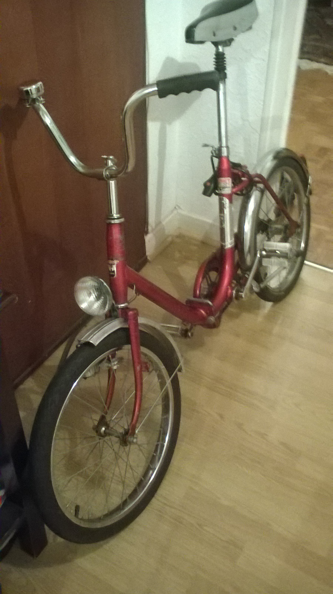
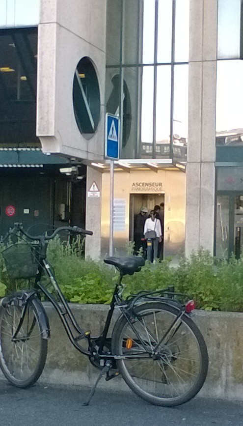
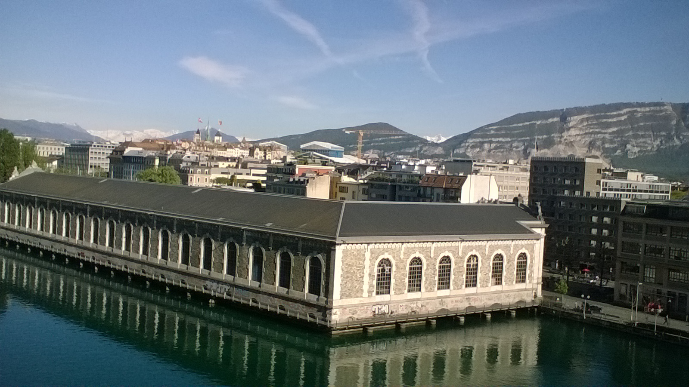
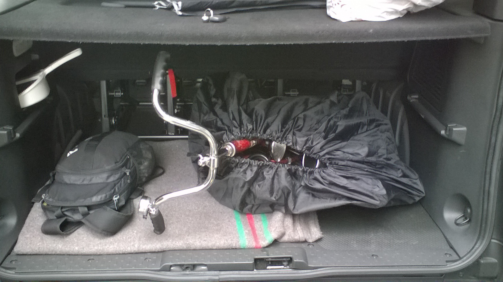

Riding with a foldable bicycle
Early in the morning, at half past six, I take my old foldable bicycle. It was made by a french mark called Motobécane that was one that started to manufacture foldable bicycles in the 1960's and 1970's. I don't know how old mine is, but I am pretty sure that it is older than me.
I ride along the Geneva lake, and to go up to the Saint Jean area, I take an elevator up to the sixth floor from the Quai de Seujet street.
The elevator is called Panoramic because one has a pretty nice view from above on the city center and the river Rhône beneath with as a background the Mount Salève.
While at work, I keep the bicycle in the trunk of my minibus even if my boss is not happy about it, but I need it between two shifts. (He never said anything but doesn't look happy when he sees it.)
Then on the way back it is time of the trafic jams around 5 pm up to 8 pm and everybody is in a hurry to get home, so I have to be careful how I drive the bicycle not to finish in hospital instead of getting home safe.